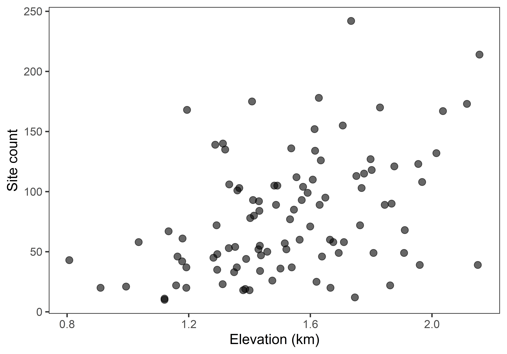
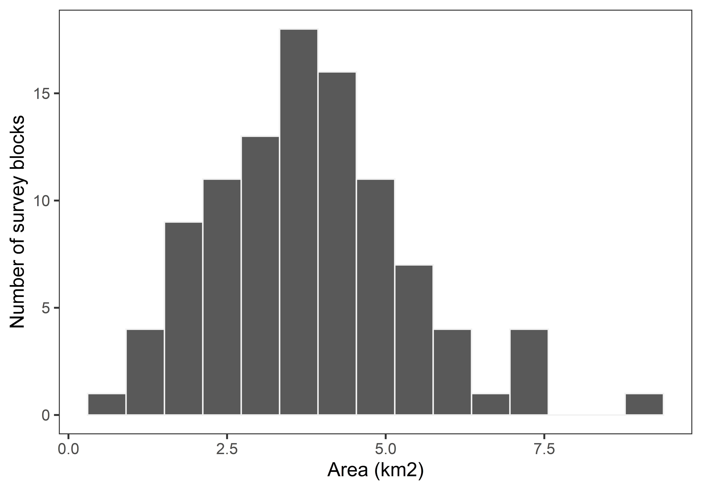
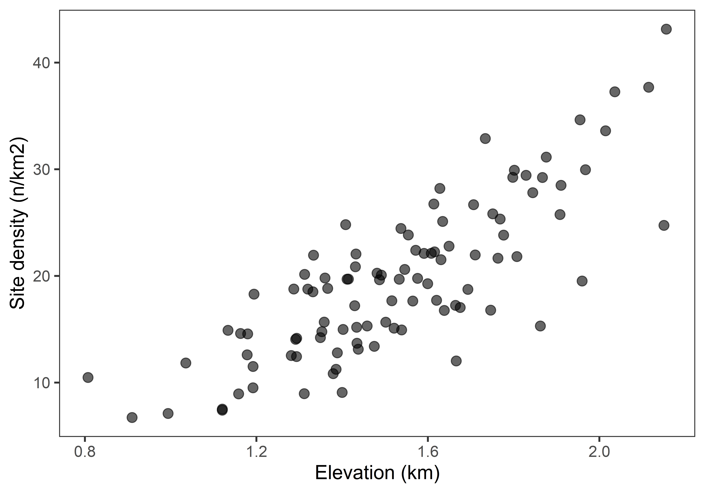
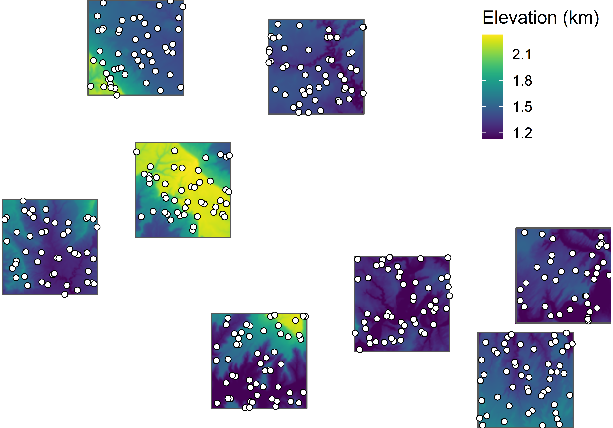
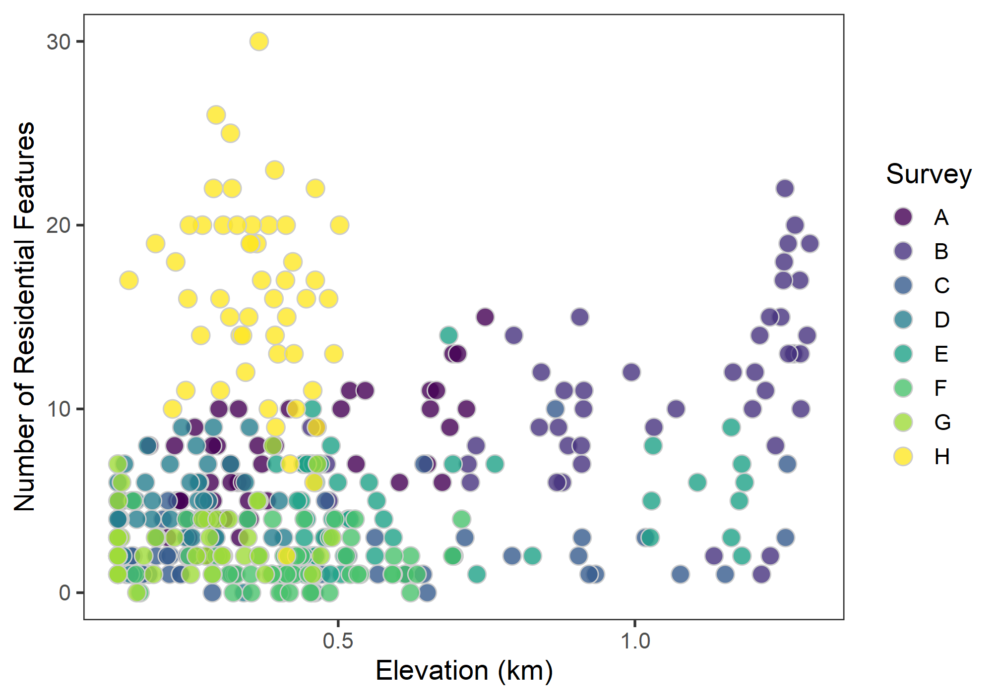
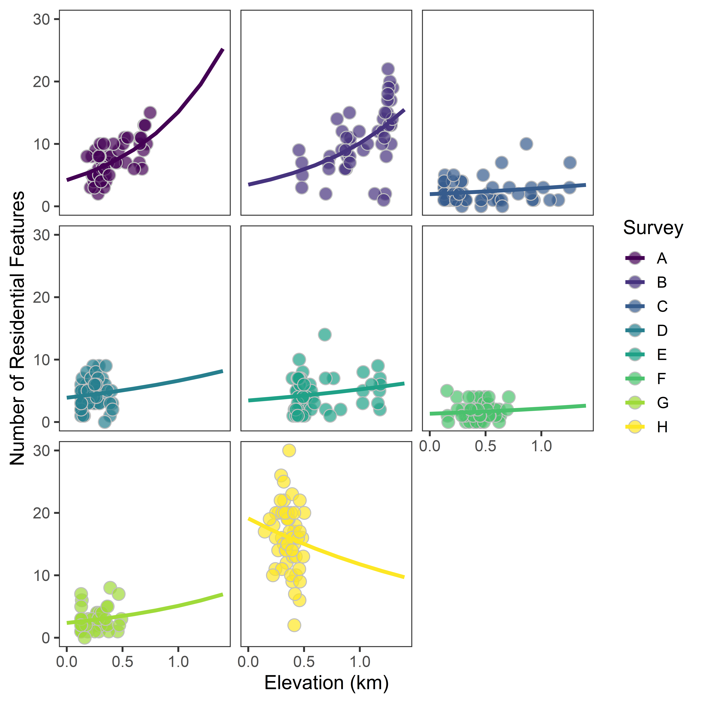

TL;DR Random effects!
Caution! Please note that all labs assume that you are working in an RStudio Project directory!
This lab will guide you through the process of
We will be using the following packages:
To install these packages, run the following code in your console:
install.packages(
c("dplyr", "ggeffects", "ggplot2", "here", "lme4", "viridis")
)Note: You should not install.packages()
in an Rmd document. Use that function in your R console instead. Then
use library() as part of the preamble in your Rmd document
to check packages out of the library and use them in that R session.
This should always go at the start of your document!
library(dplyr)
library(ggeffects)
library(ggplot2)
library(here)
library(lme4)
library(viridis)surveys
survey polygons
In this section, we’ll learn how to create a rate model using a
Poisson GLM with a a log offset to account for differences in the size
of the sampling interval. Here, we’ll be using the surveys
data to answer the following
Question Does elevation drive variation in the number of archaeological sites per survey block?
So, first, we’ll load in the data. This time, we’ll have to download the data, then load it into R.
download.file(
"https://raw.githubusercontent.com/kbvernon/qaad/master/datasets/surveys.csv",
destfile = here("data", "surveys.csv")
)
surveys <- here("data", "surveys.csv") %>%
read.csv() %>%
as_tibble()
surveys## # A tibble: 100 x 4
## block sites area elevation
## <dbl> <dbl> <dbl> <dbl>
## 1 1 53 2.86 1.33
## 2 2 92 4.41 1.43
## 3 3 108 3.61 1.97
## 4 4 52 3.44 1.52
## 5 5 37 2.48 1.54
## 6 6 132 3.93 2.01
## 7 7 46 2.74 1.64
## 8 8 10 1.33 1.12
## 9 9 48 3.39 1.29
## 10 10 103 5.47 1.37
## # ... with 90 more rowsAs before, we’ll plot these data using a scatterplot.
ggplot(surveys, aes(elevation, sites)) +
geom_point(
size = 3,
alpha = 0.6
) +
labs(
x = "Elevation (km)",
y = "Site count"
)
Now, let’s look at differences in the area of each survey block.
ggplot(surveys, aes(area)) +
geom_histogram(
color = "gray95",
bins = 15
) +
labs(
x = "Area (km2)",
y = "Number of survey blocks"
)
As you can see, the size of each survey block is not the same. This is not good! For the size biases the count: bigger areas should just by being bigger have more sites and smaller areas less sites just as a matter of chance. To account for this, we need to weight the response by the area.
ggplot(surveys, aes(elevation, sites/area)) +
geom_point(
size = 3,
alpha = 0.6
) +
labs(
x = "Elevation (km)",
y = "Site density (n/km2)"
)
In this section, we will learn how to fit a Generalized Linear
Mixed-Effects Model (GLMM) with the lme4 package in R. To
give this some context, let’s image this scenario. We want to know
whether archaeological site complexity has some relationship with
certain ecological variables like temperature and precipitation. In this
case, we don’t have measures of those variables, just elevation, which
is correlated with both. To measure site complexity, we decide to use a
simple count of architectural features, specifically residential
features. So, we establish eight survey quadrats in our area of interest
and go collect data on sites we find in each (as shown in the figure
below).

After completing the survey and entering all the data into a spreadsheet, we pull it into R in the familiar way, albeit with some downloading from GitHub:
fn <- here("data", "residential_feature_counts.png")
download.file(
"https://raw.githubusercontent.com/kbvernon/qaad/master/datasets/survey-polygons_sites.csv",
destfile = fn
)
sites <- read.csv(fn) %>% as_tibble()
sitesNow, we want to answer the following
Question To what extent does elevation determine the number of residential features found at each site?
As per usual, let’s visualize this relationship with a scatterplot.

The first thing we want to acknowledge here is that our samples, while they might be random within each quadrat, are not necessarily random between each survey quadrat. Intuitively, a site is more likely to share the same or a similar number of features with sites in its own quadrat than it is with sites in other quadrats. There could be a number of reasons for this, one being Tobler’s Law:
… everything is related to everything else, but near things are more related than distant things. -Waldo Tobler (1970)
This and similar situations will almost always lead to autocorrelation in the errors, which can bias inferences about coefficient estimates as the standard errors tend to be underestimated.
The second thing we have to note, and this is related to the first, is the potential for heteroscedasticity, or changes in the error variance. Just as we might worry that sites in the same quadrat auto-correlate, we might worry that the variance (in this case, in the number of features at each site) differs across quadrats, too. This may, though not necessarily, lead to non-constant variance when the number of features is regressed against elevation, which - again - can bias inferences about coefficient estimates by either under or overestimating the standard errors.
A powerful way to address these issues surrounding grouped data is to model variation in the relationship between a predictor and response variable (that is, variation in the coefficients) across groups using higher-order properties of those groups. Importantly, we are going to do this at the same time that we model the first-order observations (the counts of features at individual sites). This is known as mixed-effect modeling, mixed-effects because you have both fixed-effects and random-effects. That is, you have the overall intercept and slope estimates across groups (the fixed-effects) and variance in intercept and slope across groups (the random-effects).
Now, let’s see how to fit one of these models in R. The syntax is
very similar to a GLM, but with one important change in the model
formula. To specify a random-intercept, for example, we add to the total
formula the expression (1|<group>), substituting in
for <group> the name of the group variable in our
data. 1 here indicates the intercept, and
|<group> can be read as “by group,” so the whole
thing is “model variation in intercept by group.” Using our data, the
complete formula looks like this:
residential ~ elevation + (1|survey)This is the model specification for a GLMM with a random-effect for
the intercept. The R package lme4 provides functionality to
fit a GLMM with this kind of model specification, specifically the
glmer() function. I believe it stands for generalized
linear mixed-effects regression, but don’t quote me on that. While
the name of this function is new, it has the same basic interface as the
glm() function. You give it the model formula, tell it what
exponential family distribution to use, and provide it with a dataset.
Here is how we fit a GLMM for our data:
# ri = random intercept
features_ri <- glmer(
residential ~ elevation + (1|survey),
family = poisson,
data = sites
)Notice that we supply a poisson distribution to the
family argument. This is because we are modeling counts,
specifically counts of residential features at each site.
Here is the summary for this model.
summary(features_ri)
## Generalized linear mixed model fit by maximum likelihood (Laplace
## Approximation) [glmerMod]
## Family: poisson ( log )
## Formula: residential ~ elevation + (1 | survey)
## Data: sites
##
## AIC BIC logLik deviance df.resid
## 1913 1925 -953 1907 397
##
## Scaled residuals:
## Min 1Q Median 3Q Max
## -3.589 -0.768 -0.129 0.739 4.376
##
## Random effects:
## Groups Name Variance Std.Dev.
## survey (Intercept) 0.485 0.697
## Number of obs: 400, groups: survey, 8
##
## Fixed effects:
## Estimate Std. Error z value Pr(>|z|)
## (Intercept) 1.228 0.254 4.84 1.3e-06 ***
## elevation 0.688 0.108 6.36 2.0e-10 ***
## ---
## Signif. codes: 0 '***' 0.001 '**' 0.01 '*' 0.05 '.' 0.1 ' ' 1
##
## Correlation of Fixed Effects:
## (Intr)
## elevation -0.214A couple of things to note about this summary.
Adding a random-effect for the slope (or slopes) requires a simple
amendment to the equation specified above. Specifically, we will replace
the 1 in (1|<group>) with the name of a
covariate that we believe may have a varying coefficient across groups.
So, the new syntax is (<covariate>|<group>), in
this case (elevation|survey). Note that this also
implicitly includes a random-effect for the intercept. We read this as
saying “model variation in the intercept and slope for elevation by
survey block.”
Here is the full syntax for fitting a random-slope model.
# rs = random slope
features_rs <- glmer(
residential ~ elevation + (elevation|survey),
family = poisson,
data = sites
)And here is the model summary.
summary(features_rs)
## Generalized linear mixed model fit by maximum likelihood (Laplace
## Approximation) [glmerMod]
## Family: poisson ( log )
## Formula: residential ~ elevation + (elevation | survey)
## Data: sites
##
## AIC BIC logLik deviance df.resid
## 1904 1924 -947 1894 395
##
## Scaled residuals:
## Min 1Q Median 3Q Max
## -3.450 -0.758 -0.131 0.709 4.393
##
## Random effects:
## Groups Name Variance Std.Dev. Corr
## survey (Intercept) 0.575 0.758
## elevation 0.369 0.607 -0.53
## Number of obs: 400, groups: survey, 8
##
## Fixed effects:
## Estimate Std. Error z value Pr(>|z|)
## (Intercept) 1.251 0.277 4.51 6.4e-06 ***
## elevation 0.558 0.268 2.08 0.037 *
## ---
## Signif. codes: 0 '***' 0.001 '**' 0.01 '*' 0.05 '.' 0.1 ' ' 1
##
## Correlation of Fixed Effects:
## (Intr)
## elevation -0.544This is the same print out as before, but with a few notable differences.
\[ICC = \frac{\tau^2}{\tau^2+\sigma^2}\]
The main thing to use this statistic for is to assess the importance of groups in the model. If ICC is zero, then the group effect is negligible.
Now, let’s talk about how to visualize the modeled relationship
between feature counts and elevation. For a GLMM, this is a wee-bit more
complicated than a simple GLM, so we are going to use a new package
called ggeffects for this purpose. The process is still the
same. First, we generate a table of data by using the model to estimate
the response across the range of the covariate. Then, we use that data
to plot the response. In this case, we will use the
ggpredict() function from ggeffects to
generate a table of data for plotting. Then, we will use
ggplot() to generate the figure.
The ggpredict() function is extremely useful. In fact,
you might even consider using it to generate data for visualizing GLMs
and even simple linear models. Like with the base predict()
function, it’s first argument is a fitted model. You can also specify
what variables to visualize (in this case, we only have one,
elevation), and you can tell it what levels of a factor
variable (in this case, survey blocks) to visualize with.
You provide this to the terms argument.
If you want to include random-effects, we have add a few arguments to
ggpredict(). First, we need to provide the factor variable
to the terms argument. In this case, that would be
terms = c("elevation", "survey"). Second, we need to
specify the type of model this is using type = "random".
So, the full function call using the random-slope model is this.
responses <- ggpredict(
features_rs,
terms = c("elevation", "survey"),
type = "random"
)
responses
## # Predicted counts of residential
##
## # survey = A
##
## elevation | Predicted | 95% CI
## --------------------------------------
## 0.00 | 4.20 | [0.55, 32.11]
## 0.40 | 7.01 | [0.92, 53.59]
## 0.60 | 9.06 | [1.18, 69.24]
## 1.40 | 25.24 | [3.30, 192.93]
##
## # survey = B
##
## elevation | Predicted | 95% CI
## --------------------------------------
## 0.00 | 3.47 | [0.46, 26.19]
## 0.40 | 5.32 | [0.70, 40.16]
## 0.60 | 6.59 | [0.87, 49.74]
## 1.40 | 15.49 | [2.05, 116.96]
##
## # survey = C
##
## elevation | Predicted | 95% CI
## -------------------------------------
## 0.00 | 1.95 | [0.26, 14.62]
## 0.40 | 2.29 | [0.31, 17.17]
## 0.60 | 2.48 | [0.33, 18.61]
## 1.40 | 3.43 | [0.46, 25.68]
##
## # survey = D
##
## elevation | Predicted | 95% CI
## -------------------------------------
## 0.00 | 3.89 | [0.52, 29.12]
## 0.40 | 4.81 | [0.64, 35.99]
## 0.60 | 5.35 | [0.71, 40.01]
## 1.40 | 8.17 | [1.09, 61.11]
##
## # survey = E
##
## elevation | Predicted | 95% CI
## -------------------------------------
## 0.00 | 3.45 | [0.46, 25.89]
## 0.40 | 4.07 | [0.54, 30.59]
## 0.60 | 4.43 | [0.59, 33.25]
## 1.40 | 6.18 | [0.82, 46.41]
##
## # survey = F
##
## elevation | Predicted | 95% CI
## -------------------------------------
## 0.00 | 1.33 | [0.18, 10.07]
## 0.40 | 1.61 | [0.21, 12.22]
## 0.60 | 1.78 | [0.23, 13.46]
## 1.40 | 2.61 | [0.34, 19.82]
##
## # survey = G
##
## elevation | Predicted | 95% CI
## -------------------------------------
## 0.00 | 2.37 | [0.31, 18.20]
## 0.40 | 3.22 | [0.42, 24.76]
## 0.60 | 3.75 | [0.49, 28.87]
## 1.40 | 6.95 | [0.90, 53.42]
##
## # survey = H
##
## elevation | Predicted | 95% CI
## --------------------------------------
## 0.00 | 19.11 | [2.44, 149.94]
## 0.40 | 15.74 | [2.01, 123.49]
## 0.60 | 14.29 | [1.82, 112.08]
## 1.40 | 9.69 | [1.24, 76.03]While this printout is somewhat involved, under the hood, it’s really
just a data.frame with six important columns:
x - the predictor variable,predicted - the estimated response,std.error - the standard errorconf.low - the lower confidence level at 95%, so
roughly \(predicted - 2\cdot
std.error\).conf.high - the upper confidence level at 95%, so
roughly \(predicted + 2\cdot
std.error\).group - the levels or groups in the factor variable
used, in this case, to estimate random effects.So, we can use these variables in our responses table to
plot the responses! Here, we are going to do all of the following.
survey variable in the sites table to
group, the same name it has in the responses
table.viridis color package to apply the
viridis color palette to the survey groups. Note that we
use the same name = "Survey" for both
scale_fill_viridis() and
scale_color_viridis(). This does two things.
scale_fill_viridis() function!), so we can see overlap in
points.shape = 21 and
color = "gray75", so we can add a gray circle around each
point to delineate them.theme().ggplot(responses) +
geom_point(
data = sites %>% rename("group" = survey),
aes(elevation, residential, fill = group),
shape = 21,
color = "gray75",
size = 4
) +
scale_fill_viridis(
name = "Survey",
alpha = 0.7,
discrete = TRUE
) +
geom_line(
aes(x, predicted, color = group),
size = 1.3
) +
scale_color_viridis(
name = "Survey",
discrete = TRUE
) +
facet_wrap(~ group, nrow = 3, ncol = 3) +
theme(
strip.background = element_blank(), # remove gray box above each facet
strip.text = element_blank() # remove text labels above each facet
) +
labs(
x = "Elevation (km)",
y = "Number of Residential Features"
)
No homework this week!